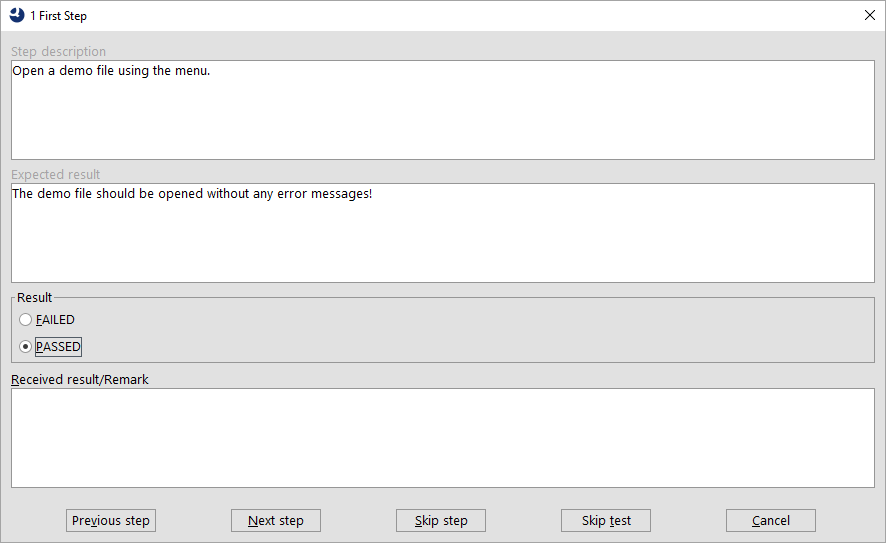

| Version 6.0.3 |
QF-Test is primarily a tool for the creation and execution of automated tests. However, it is rarely possible - or economical - to automate 100% of the required tests for a project. In most projects some manual tests need to be performed as well. One of the biggest challenges in testing a project is consolidating the different results and reports of automated and manual testing to get an overview about the execution status of all tests. To facilitate reporting the results of manual test execution along with those of automated testing, QF-Test now offers the capability of tracking manual tests from within itself.
The steps to be performed during a manual test have to be defined in an Excel file which
is read by a test-suite called ManualTestRunner.qft. This test-suite is
provided along with a sample specification file in the directory
demo/manualtester below the QF-Test installation directory. The test designer
has to specify each step in that Excel file including the expected result. After stepping
through the manual tests QF-Test provides the usual results - a run-log, HTML and XML
reports. Additionally, a newly created Excel file with the results of the respective
test-run is created. For a detailed description please see section 30.2.
The dialog used for the test execution is called ManualStepDialog and looks
like this:
|
|  | ||
|
| Figure 30.1: Example for a ManualStepDialog | ||
The title of the dialog shows the name of the test-case. The detailed step description and the expected result are shown in the first two text-boxes. After performing the test the tester has to specify whether the test succeeded or not. In case the test failed the tester also has to enter the received result which is intended to show the differences between the actual and the expected result. This dialog can also be used for your own purposes, see section 53.1.
Please perform the following steps on your system to launch a manual test from QF-Test.
qftest-6.0.3/demo/manualtester/SampleTestDescription.xlsx to your
project location and rename it to a suitable name. We recommend to use the same path on
all test-systems. Perhaps you can make use of a shared network drive.
qftest-6.0.3/demo/manualtester/ManualTestRunner.qft to your
project location. You may want to rename it as well.
testFile variable to target your specific Excel file.
Please read the comments in the test-suite and Excel file carefully, because you can adapt this concept according to your needs. It is even possible to start only specific tests.
The Excel file has a specific structure which allows you to describe the manual test-steps quite flexibly. The meaning of the columns is explained in the following table:
|
|
|
||||||||||||||||
|
| Table 30.1: Description of the Excel file for the definition of manual tests | ||||||||||||||||
The Excel file with the results of the manual test execution will contain two additional columns as follows:
|
|
|
||||||||
|
| Table 30.2: Description of the Excel file with the results of manual tests | ||||||||
The ManualTestRunner.qft test-suite contains some global variables at
suite-level which provide fine-grained control over test-run. These are explained in the
following table. All variables not listed here are used internally by the test-suite and
should not be changed.
|
|
|
||||||||||||||||||||||||||||
|
| Table 30.3: Description of the global variables in the ManualTestRunner test-suite | ||||||||||||||||||||||||||||
An executed test-step can be set to one of the following states:
|
|
|
||||||||||||
|
| Table 30.4: States of manual test-execution | ||||||||||||
| Last update: 9/6/2022 Copyright © 1999-2022 Quality First Software GmbH |